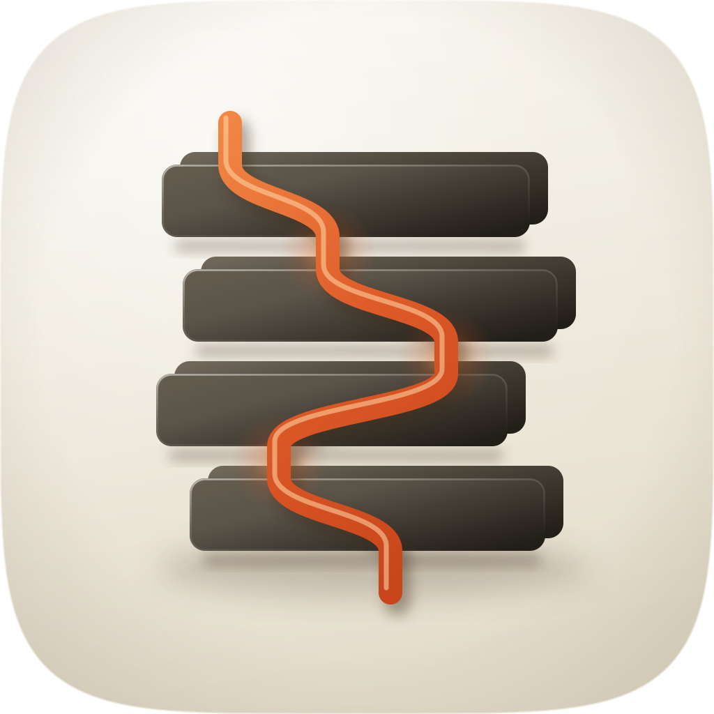
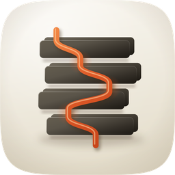
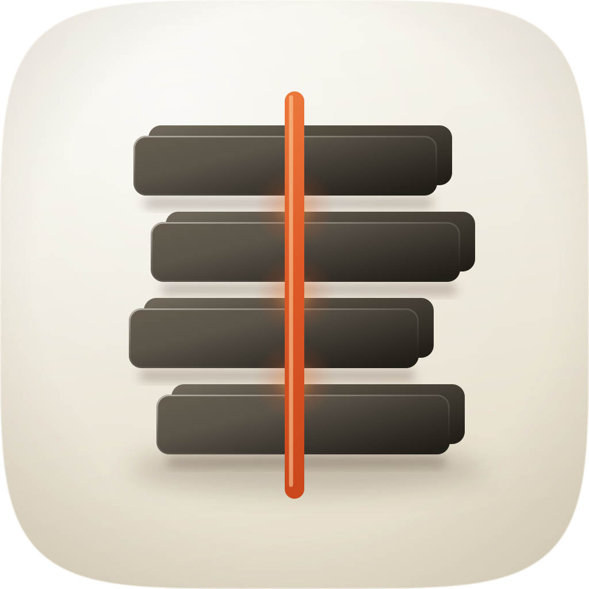
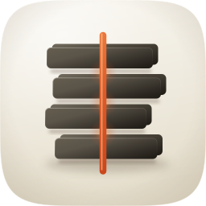
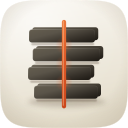
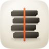
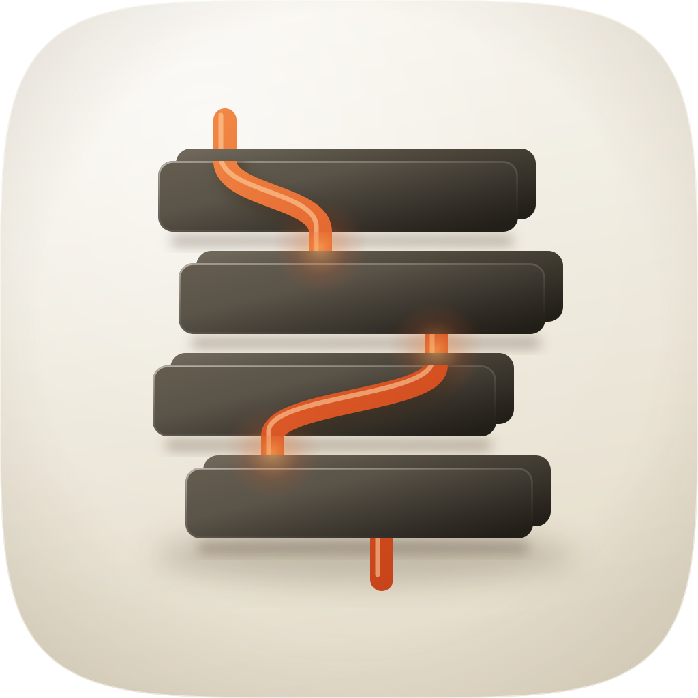
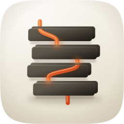
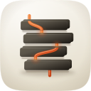
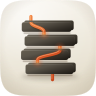

| Take | Hero at 1024, then renders at 128 / 64 / 48 / 32 / 16 css px (2× retina sources), plus the 16px squint magnified | Rubric | Verdict |
|---|---|---|---|
| master · icon.svgEngine A, hand-authored layered SVG, SHIPS |   |
11 / 12 | The meander is the identity: at 16px the stack reads as four dark bars and the cord as one warm S through them, which is the whole claim (one thread, separate paragraphs). Checks 1 to 4 pass: squircle from the shared path, stack inside the 60% band, silhouette not a rectangle because the slabs are offset and the cord exits above and below, 16px identity holds. One key light upper left; graphite and vermilion are the two hue families. Passes fidelity.py structure (18 paths, 4 named groups). Liability on check 9 (focal sizing): the cord is 34px wide at 1024 and at 16px it is a 1px line, so it depends on the ember's saturation against porcelain rather than on width. |
| A2-spine · icon-A2-spine.svgEngine A alternate, straight stitch |     |
9 / 12 | Cleaner and more legible at 16px than the master, and that is its problem: a vertical line through four bars reads as a spine or a bound edge, the stock "document" glyph, and says nothing about paragraphs having to bend to reach each other. Fails check 3 (silhouette is a rectangle with a line) and the anti-sameness rule against stock category glyphs. Kept as the alternate because it proves the meander is doing the work rather than the stack. |
| A3-weave · icon-A3-weave.svgEngine A alternate, cord stitched behind slabs 2 and 4 |     |
8 / 12 | The richest depth of the three at 1024 (the cord passes into the stack and out again, and the slabs cast onto it), and the worst below 64: with the cord hidden behind two of the four slabs, the 16px squint shows a dashed line, which is the broken thread the skill exists to prevent. Fails check 4 (16px identity) and check 8 (depth coherence collapses when the hidden passes vanish). The comparison it settles: the cord has to stay in front for the identity to survive, so the master keeps it on the faces. |